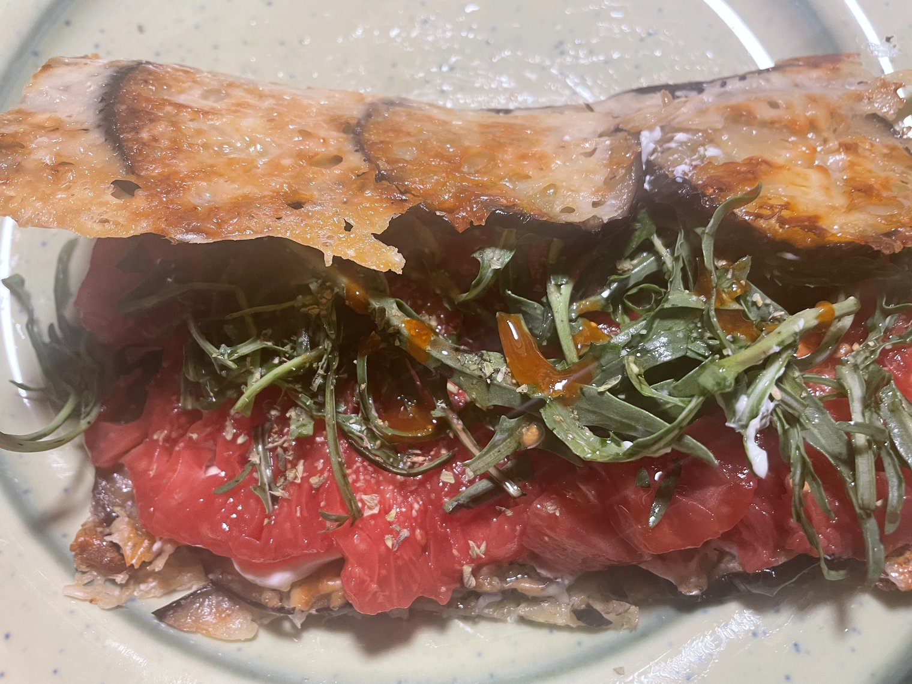

Milhojas de berenjena con tomate y parmesano crujiente
Ingredientes
2×
- 1 berenjena
- aceite de oliva
- sal
- parmesano rallado
- 2 tomates pelados
- mozzarella
- rúcula
- orégano seco
- aceite picante

Preparación
Paso 1
Cortar 1 berenjena en rodajas finas, ponerlas en una bandeja con aceite de oliva y sal, cubrir con parmesano rallado y hornear a 200ºC unos 20min, hasta que el queso quede crujiente.
Paso 2
Cortar 2 tomates pelados en láminas.
Paso 3
Montar capas de berenjena, tomate, mozzarella y rúcula, terminando con una capa de berenjena con parmesano crujiente.
Paso 4
Aliñar con orégano seco y un hilo de aceite picante.